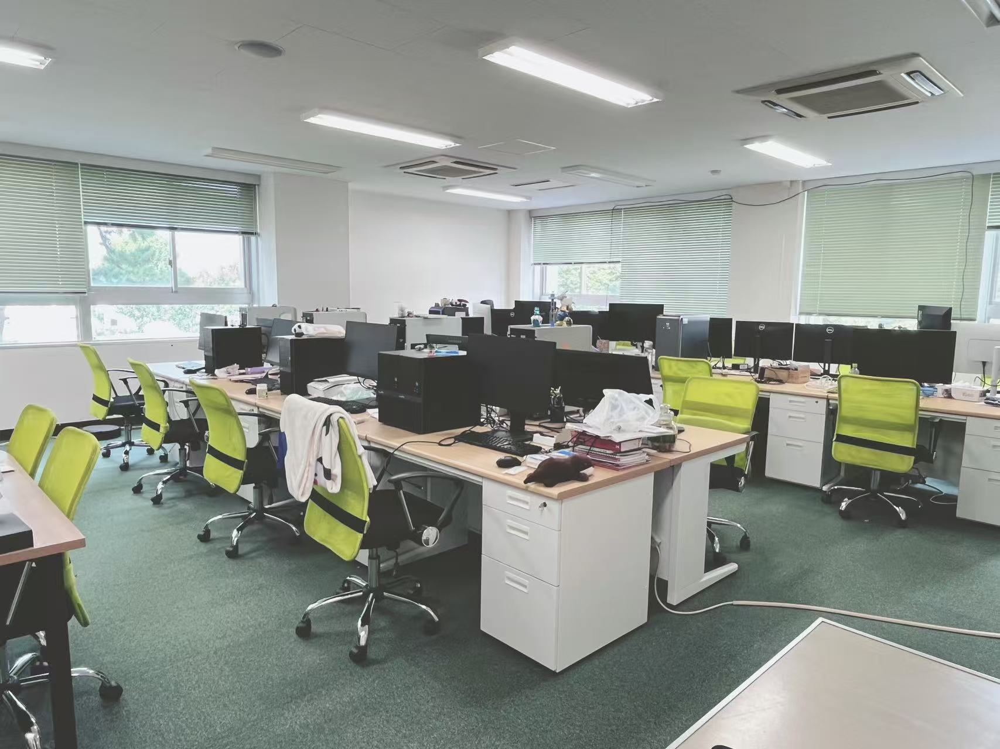

Message for Applicants
We are looking for students and researchers who are genuinely passionate about research. Our laboratory works where wireless communications meet bioelectromagnetics: wireless systems, antennas, radio channels and propagation environments, and human exposure to electromagnetic fields (EMF). If you are interested in these topics, we welcome your application to our Master and PhD programs or for postdoctoral positions. We are also pleased to support exceptional candidates in applying for external fellowships.

研究室配属 / Graduate Students
当研究室では、研究に対して強い熱意を持つ学生を募集しています。 研究の主軸は「無線通信と電磁界ばく露（EMF）の融合」です。 無線通信（5G/6G）、アンテナ、電波伝搬・電波環境、生体電磁工学を組み合わせた研究を行っています。 目指すのは、高速な無線通信と人体の電磁的安全性の両立です。
当研究室は、国内外の大学・研究機関との共同研究を積極的に進めています。 ゼミやディスカッションでは、英語を使う機会も多くあります。 意欲のある学生は、フランスや北欧などの連携研究室へ訪問研究に派遣しています。 派遣期間の目安は、修士で約3か月、博士で半年〜1年です。 また、毎年これらの連携研究室から訪問学生を受け入れており、日常的に国際交流ができる環境です。 研究室には、国籍や文化的背景の異なるメンバーが在籍しています。 互いの多様性を尊重できる方、海外での研究経験を積みたい方を歓迎します。
研究室では、国の委託研究や共同研究に基づく課題に取り組んでいます。 そのため、一人ひとりが責任を持って研究を進めることが求められます。 自ら考えて主体的に取り組む姿勢と、最後までやり遂げる粘り強さを重視します。 卒業研究の配属は、教員との面談で示される研究テーマへの興味・熱意、および研究に取り組む姿勢を基に決定します。 興味のある方は、どうぞお気軽にご連絡ください（li.kun[at mark]awcc.uec.ac.jp）。
研究室配属のスケジュール (B3)
| 10月下旬 | 研究室訪問の受付開始 |
| 11月上旬 | P2 情報通信工学プログラム & P3 電子情報学プログラム 合同研究室紹介 |
| 11月下旬 | 1次配属 |
| 12月下旬 | 2次配属 |
| 1月下旬 | 3次配属 |
卒研生の受け入れ枠は、例年現役生3名・過年次生1名です。 当研究室に興味のある方は、できるだけ早めにご連絡ください。
卒業研究のスケジュール (B4)
週1回ゼミ（研究の進捗状況報告、全員参加必須）
| 3月 | 研究室集合、新B4・M1勉強会（AWCCイベント） |
| 4〜6月 | 基礎ゼミ（AWCCイベント） |
| 7〜8月 | 院試準備、就活期間、合宿（AWCCイベント） |
| 9月下旬 | 中間発表（EIプログラムで） |
| 9〜1月 | 卒業論文作成、発表練習 |
| 2月上旬 | 卒論発表（EIプログラムで） |
| 3月中旬 | 学会発表（IEICE全国大会、大学院進学者必須） |
博士前期課程のスケジュール (M1/M2)
週1回ゼミ（研究の進捗状況報告、全員参加必須）
修士と博士 / Master and PhD Students
博士前期課程および博士後期課程の学生を随時募集しています。 他大学からの進学、編入希望者の方々は、以下に示す大学院入試スケジュールをご参考ください。
We are currently accepting applications for master's and PhD program students. Prospective students are encouraged to refer to the entrance examination schedule below.
博士後期課程の留学生の皆様には、文部科学省（MEXT）などの国費奨学金の申請をご検討ください。
To PhD program international students, please consider applying for Japanese government scholarships (MEXT).
How to Apply
Please send your CV, publication list, motivation letter, and reference letters (optional) to: li.kun[at mark]awcc.uec.ac.jp
We welcome applications from all backgrounds. International applicants and students from other universities are strongly encouraged to apply.